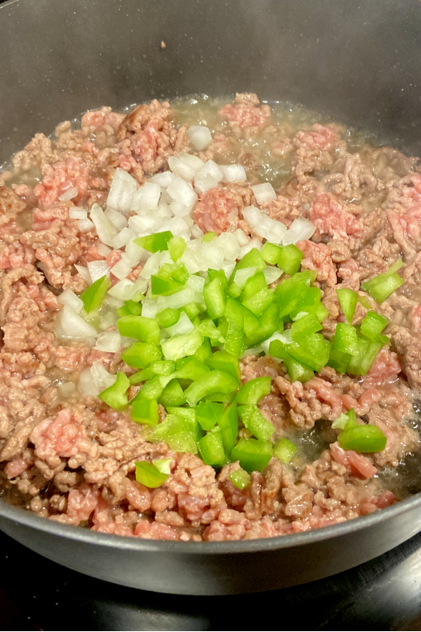

Home page
tamon gratin recipe

- potato
- onion
- pepper pepper
- ground beef
- all purpose flour
- BUTTER
- milk
- mozzarella cheese
- ground nutmeg
- salt and black peppper
direction
- peel the cut the potatoes in circle then add them to a put them in a pot with water and salt then boil it till
soft

- cook the ground beef in a pot season it with salt black pepper and other season in it with your choice
- then add onions and bell peppes to it once the ground beef is ready then left them get soft

- to make the bechamel sauce you will need to melt so butter then add flour to it let it get thick then and milk
to it mix it if it get to light and flour if to heavy and milk then season it with black pepper and salt then at
the end add grounded nutmeg to it
- to assemble it and butter to the bottom and side of the a heatproof dish start by adding the potatoes and ground
beef the bechamel sauce then repeat till it fills up the add mozarella cheese on top and put it in the oven till
the cheese melt to your liking
lab3 page